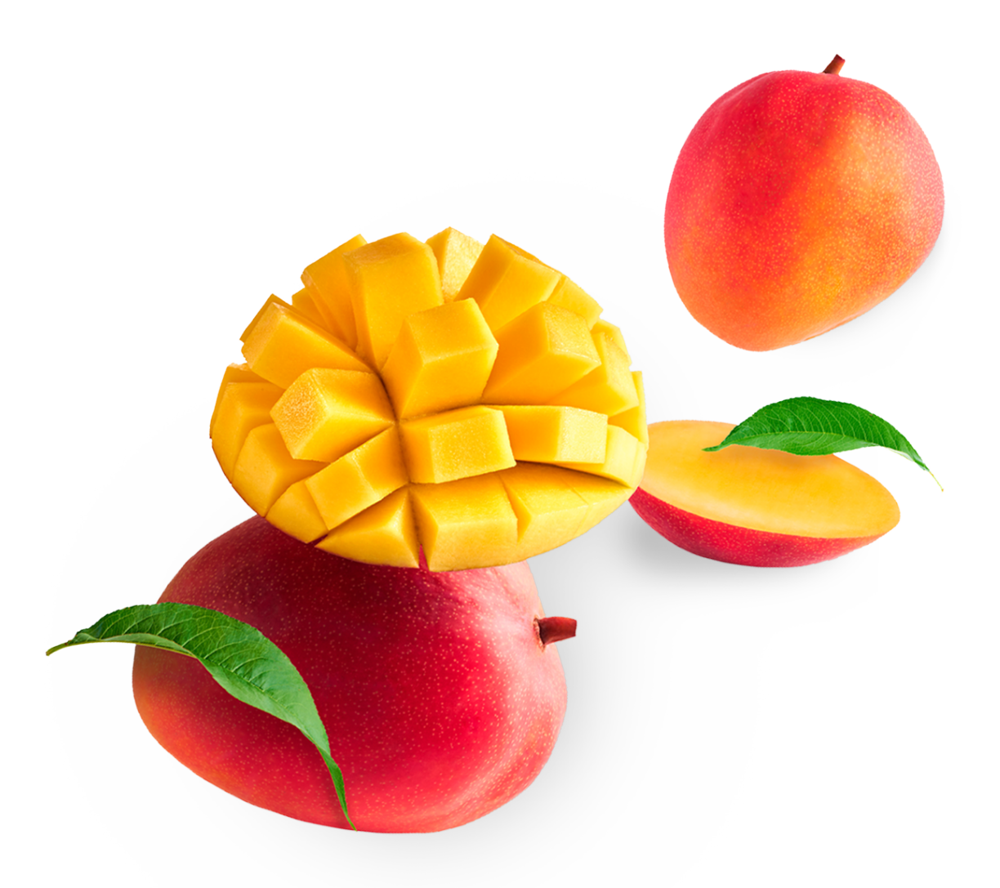

Mango by Admin Z
Home
Recipes
Contact
Indonesian
Indonesian
English
Try Mango!
Find mangoes around you, and discover interesting facts as well as recipes for the best ways to enjoy mangoes.
Buy Now

How to Cut a Mango?
Take a look at the video!
Meet Our Team!
{{language}}
{{mango.name}}
Details
{{ mango.isAvailable ? 'Buy Now' : 'Out of Stocks' }}
{{ selectedMango.name }}
{{ selectedMango.description }}